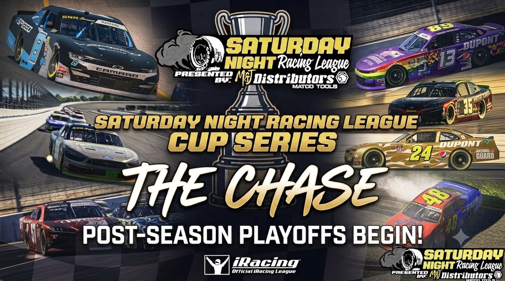

The Chase is Set — 14 Drivers Battle for the Season 6 Championship

The Saturday Night Racing League Cup Series regular season is officially in the books. After 17 grueling races, the field has been trimmed and the Chase for the SNR Cup Series Championship is now locked in. Fourteen drivers have earned their shot at glory, separated by just 25 points as they enter the 5-race playoff format beginning July 11th at Talladega Superspeedway.
Here’s a look at each of the 14 Chase contenders and how they earned their spot:
1. Kenny Kibbey — 2,025 pts
Kenny Kibbey enters the Chase as the top seed and regular season points champion — a remarkable achievement for a driver who didn’t win a single race all season. Kibbey’s secret? Relentless consistency. He accumulated 7 top-5s and 10 top-10s across 17 starts, rarely finding himself outside the top 15. Perhaps most impressive of all, Kibbey completed the most laps of any driver in the entire series through the regular season — a testament to his ability to always finish races on the lead lap and minimize any bad days. He enters Talladega with the biggest points cushion and a target on his back.
2. Bailey Turner — 2,015 pts
Bailey Turner is one of the most complete drivers in the series and his regular season proved it. Three wins, 9 top-5s, and 12 top-10s across 16 starts — Turner was a championship contender from wire to wire. His victories at Auto Club, Martinsville, and Nashville showcased his versatility across all track types. The #24 led the championship standings for much of the second half of the season before Kenny Kibbey’s consistency edged him to P2. Turner enters the Chase just 10 points back and very much in the title hunt.
3. A.J. Stravato — 2,012 pts
A.J. Stravato was the dominant force in the first half of Season 6, winning at Rockingham, Texas, and Dover to surge to the championship lead. He tied for the most top-5 finishes of all 14 Chase drivers with 9 — matching Bailey Turner — and tied Jeff J. Wright for the most podium (top-3) finishes with 7. Stravato also posted the 2nd fewest incident points of any Chase driver through the regular season with just 43, only Jeff Wright had fewer with 19. He enters the Chase just 13 points back and hungry to reclaim the top spot.
4. Seth Hatchel — 2,010 pts
Seth Hatchel quietly put together one of the most underrated regular seasons in the field — 0 wins, but 4 top-5s and a staggering 15 top-10s across 16 starts. Impressively, Hatchel boasts the best average finish of all 14 Chase drivers at 7.1, underscoring just how consistently he ran at the front throughout the season. He earned the pole at Nashville and was a fixture inside the top 10 week after week. If there’s a Cinderella story waiting to happen in the Chase, Hatchel is it.
5. Phillip Brewer — 2,009 pts
Phillip Brewer had a breakout regular season and enters the Chase with a pedigree that shouldn’t be overlooked — he is a former SNR Challenger Series Champion from Season 3 and knows exactly what it takes to win a championship. Zero wins in the regular season, but 5 top-5s, 10 top-10s, and 3 poles across 17 starts — including a runner-up finish in the regular season finale at Chicagoland where he pushed Jeff Wright all night long. He enters the Chase without a win but with momentum and a championship mindset that has paid off before.
6. J R Shepherd — 2,008 pts
J R Shepherd was one of the most active racers in the field all season — 17 starts, 6 top-5s, 9 top-10s, and 3 poles. Shepherd led the 2nd most laps of any driver through the regular season with 358 — only Jeff J. Wright led more with 946. He was a front-runner at tracks ranging from short tracks to superspeedways, and the combination of consistency and raw speed makes him one of the most dangerous drivers in the Chase field.
7. Jeff J. Wright — 2,007 pts
The numbers tell the story: 6 wins, 4 poles, 7 top-5s, and the fewest incident points of all 14 Chase drivers with just 19. Wright also tied A.J. Stravato for the most podium finishes with 7 and led a staggering 946 laps through the regular season — far and away the most of any driver in the series. He won at Phoenix, Las Vegas, Iowa, Sonoma, Charlotte, and Chicagoland — the most wins of any driver in Season 6 by a wide margin. DNFs at EchoPark Speedway and Dover Motor Speedway, along with missed starts at Nashville and Rockingham, cost him dearly in the standings. He enters the Chase 18 points back despite being the most dominant driver of the regular season. If his car is on the track, he is the championship favorite.
8. Joshua Banks — 2,006 pts
Joshua Banks saved his best for last. After a quiet start to the season, Banks erupted with 3 wins in the second half — at Darlington Raceway, Atlanta, and Richmond — showing the kind of late-season form that makes him a dangerous Chase contender. Eight top-5s and 10 top-10s in 15 starts make Banks one of the most well-rounded drivers in the Chase field and a driver fully capable of going on a run when it matters most.
9. Elliott Butler — 2,005 pts
Elliott Butler may be the ultimate survivor story of Season 6. Zero wins through 17 starts, but a remarkable 6 top-10s and a relentless ability to be there at the end of every race made him one of the most reliable points scorers in the series. Butler also posted the 2nd most total passes through the regular season with 828 — only Kenny Kibbey had more with 867 — reflecting his aggressive, never-give-up driving style. His best finish of the season — 3rd at Richmond — came at a critical moment. Butler enters the playoffs with a quiet confidence that comes from never beating himself.
10. Angelo Hronis — 2,004 pts
Angelo Hronis quietly crept his way into the Chase with 2 top-5s and 6 top-10s in 16 starts. He was a consistent mid-pack presence who made the most of his opportunities when the field ahead of him had attrition. His 5th place finish at Chicagoland was a strong late-season statement. Hronis enters the Chase as one of the longer shots but has shown the ability to elevate his game when the stakes are highest.
11. Justin Richie — 2,003 pts
Justin Richie earned his Chase spot through sheer persistence — 17 starts, 5 top-10s, and a pole position to his name. Richie rarely put himself in harm’s way and consistently brought his car home in one piece. His clean driving style and track knowledge at upcoming Chase venues could make him a factor in the title fight.
12. Dakota Floyd2 — 2,002 pts
Dakota Floyd2 brings a championship pedigree into the Chase that few can match — he is a two-time SNR Challenger Series Champion, winning the title in both Season 1 and Season 2, and remarkably never needed a single race win in his Season 1 campaign to take the trophy. Can he replicate that same championship magic in Season 6 of the SNR Cup Series without a win? Floyd showed flashes of brilliance throughout the regular season with 3 top-5s and 4 top-10s, and his willingness to race up front makes him capable of delivering when it counts most.
13. Chuck Sweeting — 2,001 pts
Chuck Sweeting was a model of consistency in Season 6 — 17 starts, 1 top-5, and 3 top-10s with minimal drama. Sweeting never won a race but remained in the Chase picture all season by avoiding the costly mistakes that eliminated so many others. He enters the playoffs with championship points on the line and will need to find another gear to compete with the drivers ahead of him.
14. Caleb Weekley — 2,000 pts
Caleb Weekley enters the Chase with exactly 2,000 points, but his season tells a fascinating story. After just 3 races, Weekley was actually leading the entire series — a remarkable start fueled by a 6th at Daytona, a 2nd at Auto Club Speedway, and a 7th at Phoenix Raceway. That blazing opening stretch had him atop the standings and looking like a serious championship threat. However, since that strong start, he has managed just two top-10 finishes — a 6th at Darlington and a 9th in his most recent start at Richmond Raceway. The talent is clearly there. Whether he can rediscover that early-season form over five Chase races will determine whether Weekley is remembered as a contender or a nearly-man in Season 6.
The most important 5-race stretch of the season. It all begins at Talladega Superspeedway on July 11th. Tune into VSPEED for the live coverage beginning at 10:00 PM EST.